11 Resistencia
La resistencia en conectividad ecológica se refiere al grado en que las características del paisaje dificultan o facilitan el movimiento de los organismos entre parches de hábitat. A diferencia de una simple medida de distancia geográfica, la resistencia incorpora la calidad y permeabilidad de la matriz, considerando que distintos tipos de cobertura, usos de suelo, carreteras, áreas urbanas, pendientes o niveles de perturbación pueden representar diferentes costos de desplazamiento para una especie. En este sentido, una zona de bosque continuo o de alta idoneidad ambiental puede tener baja resistencia, mientras que una carretera, un cultivo intensivo o un área urbanizada pueden tener alta resistencia. Por ello, las superficies de resistencia son hipótesis espaciales sobre cómo una especie percibe y atraviesa el paisaje, y son fundamentales para modelar corredores, rutas de menor costo, flujo de corriente y conectividad funcional.
Existen grandes aproximaciones para modelar resistencia, entre ellas se destacan: 1) Paisaje o agnóstico y 2) funcional. En el primero se busca mapear la naturalidad y el grado de transformación humana, un ejemplo es la huella espacial humana. Mientras que en el segundo por lo general la resistencia se asocia a la idoneidad de hábitat, donde una mayor idoneidad representa unamenor resistencia al movimiento.
En el siguiente ejemplo modelaremos la resistencia desde una perspectiva funcional, usando un modelo de distribución potencial.
11.1 Ejemplo: Introducción
Este documento presenta un flujo reproducible para construir un modelo de distribución potencial (MDP) del jaguar (Panthera onca) en Colombia y, posteriormente, transformar la idoneidad ambiental estimada por el modelo en una superficie de resistencia. La lógica general es que las áreas con mayor idoneidad ambiental pueden interpretarse como zonas de menor costo para el movimiento, mientras que las áreas con baja idoneidad pueden representar una matriz más resistente o menos permeable.
El flujo se organiza como un pequeño capítulo metodológico: primero se preparan las variables ambientales, después se descargan y depuran las ocurrencias, posteriormente se ajusta un modelo tipo MaxEnt con maxnet, y finalmente se transforma la predicción del MDP en una superficie de resistencia mediante una transformación monomolecular.
11.1.1 Ejemplo: Datos
Algunos de los pasos siguientes descargan grandes volumenes de datos, lo cual no es necesario y puedes acceder a la información usando el siguiente link:
https://drive.google.com/drive/folders/1_JYV91x8l7tKOTg9EMbYXcmO4AOA-Vbj?usp=sharing
11.1.2 Preparación del ambiente de trabajo
El primer paso consiste en instalar y cargar los paquetes necesarios. En este flujo se combinan paquetes para análisis espacial (terra, sf), descarga de datos (geodata, rgbif), modelación de distribución (maxnet), evaluación (pROC) y visualización (ggplot2).
packages <- c(
"terra", "sf", "dplyr", "geodata", "rgbif",
"maxnet", "pROC", "ggplot2", "tibble", "stringr"
)
new_packages <- packages[!(packages %in% installed.packages()[, "Package"])]
if(length(new_packages) > 0) {
install.packages(new_packages)
}
library(terra)
#> terra 1.9.11
library(sf)
#> Linking to GEOS 3.14.1, GDAL 3.12.1, PROJ 9.7.1;
#> sf_use_s2() is TRUE
library(dplyr)
#>
#> Adjuntando el paquete: 'dplyr'
#> The following objects are masked from 'package:terra':
#>
#> intersect, union
#> The following objects are masked from 'package:stats':
#>
#> filter, lag
#> The following objects are masked from 'package:base':
#>
#> intersect, setdiff, setequal, union
library(geodata)
library(rgbif)
library(maxnet)
library(pROC)
#> Type 'citation("pROC")' for a citation.
#>
#> Adjuntando el paquete: 'pROC'
#> The following objects are masked from 'package:stats':
#>
#> cov, smooth, var
library(ggplot2)
library(tibble)
library(stringr)11.1.3 Parámetros generales
En esta sección se definen los parámetros principales del análisis: la especie focal, el país, la carpeta de trabajo y el sistema de coordenadas proyectado. El sistema proyectado se utiliza especialmente para calcular distancias a carreteras en metros.
species_name <- "Panthera onca"
country_code <- "CO"
country_name <- "Colombia"
#Carpeta de trabajo donde están los archivos descargados con el link anterior
dir_data <- "C:/Users/oscta/OneDrive/Documents/R/Makurhini_manual/Jaguar/"
dir.create(dir_data, showWarnings = FALSE, recursive = TRUE)
# CRS métrico aproximado para Colombia.
# Se usa para calcular distancia euclidiana a carreteras en metros.
crs_col <- "+proj=aea +lat_1=-4 +lat_2=12 +lat_0=4 +lon_0=-74 +datum=WGS84 +units=m +no_defs"11.1.4 Área de estudio
El área de estudio corresponde a una porción de Colombia. En este ejemplo, el polígono se carga desde un archivo GeoPackage. Este polígono será usado para recortar las variables ambientales y filtrar las ocurrencias de jaguar.
colombia_sf <- read_sf(paste0(dir_data, "area_estudio.gpkg"))
# Convertir a SpatVector para operaciones con terra
colombia_v <- vect(colombia_sf)
plot(st_geometry(colombia_sf), col = "gray90", main = "Área de estudio")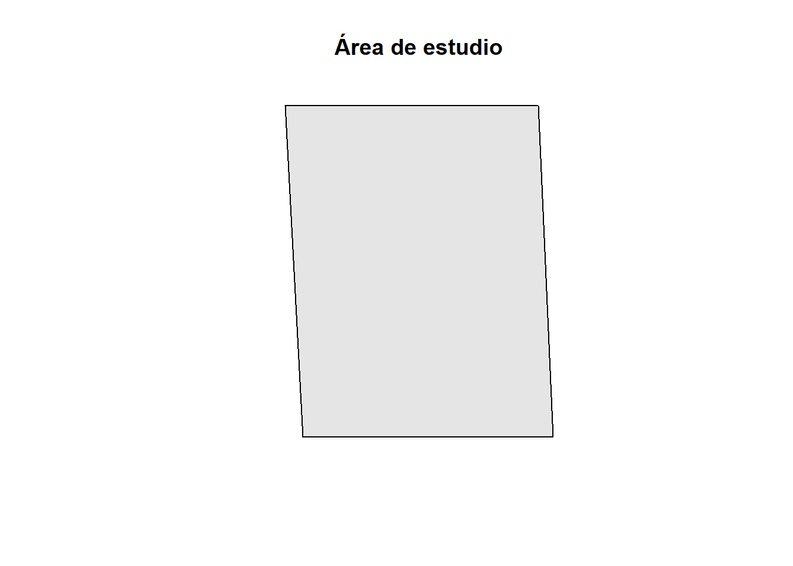
11.1.5 Descarga y depuración de ocurrencias
Las ocurrencias se descargan desde GBIF usando el nombre científico del jaguar. Después se eliminan registros sin coordenadas, registros en coordenadas cero y registros muy antiguos, si se desea limitar temporalmente el análisis.
En este ejemplo se conservan registros a partir de 1980. Este umbral puede modificarse según el objetivo del estudio, por ejemplo, para usar únicamente registros recientes.
NO ES NECESARIO CORRER
occ_raw <- rgbif::occ_search(
scientificName = species_name,
country = country_code,
hasCoordinate = TRUE,
hasGeospatialIssue = FALSE,
limit = 5000,
fields = c(
"scientificName", "decimalLongitude", "decimalLatitude",
"year", "basisOfRecord", "coordinateUncertaintyInMeters"
)
)$data
occ <- occ_raw %>%
filter(
!is.na(decimalLongitude),
!is.na(decimalLatitude),
!(decimalLongitude == 0 & decimalLatitude == 0)
) %>%
filter(is.na(year) | year >= 1980)
occ_sf <- st_as_sf(
occ,
coords = c("decimalLongitude", "decimalLatitude"),
crs = 4326,
remove = FALSE
)
# Mantener solo registros dentro del área de estudio
occ_sf <- st_filter(occ_sf, colombia_sf)
plot(st_geometry(colombia_sf), col = "gray90", main = "Ocurrencias GBIF de jaguar")
plot(st_geometry(occ_sf), add = TRUE, pch = 20, col = "red")
cat("Número de ocurrencias dentro del área de estudio:", nrow(occ_sf), "\n")SI DESCARGAS DATOS PUEDES CORRER
occ_sf <- read_sf(paste0(dir_data, "/occ_sf.gpkg"))
plot(st_geometry(colombia_sf), col = "gray90", main = "Ocurrencias GBIF de jaguar")
plot(st_geometry(occ_sf), add = TRUE, pch = 20, col = "red")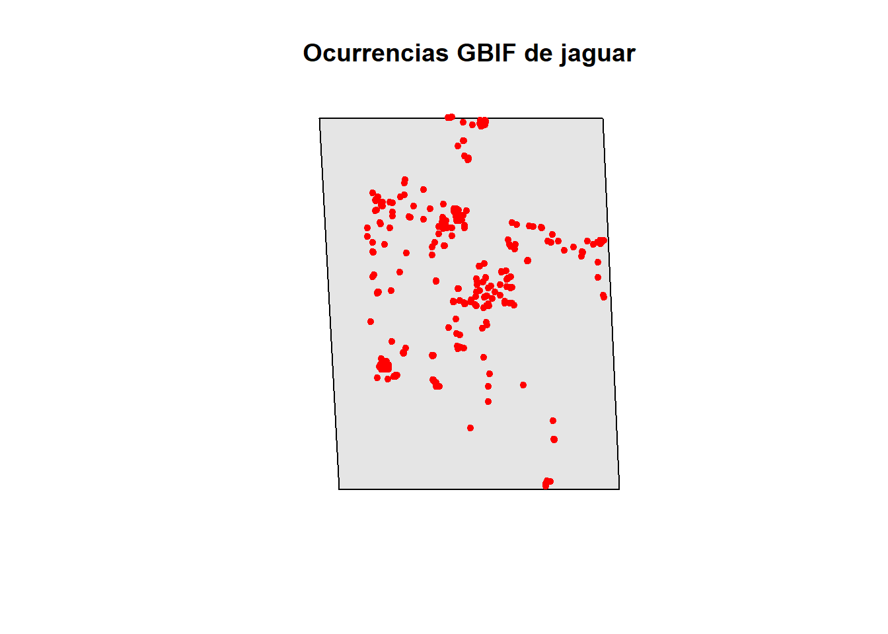
11.1.6 Variables climáticas
Las variables bioclimáticas de WorldClim representan condiciones climáticas promedio, como temperatura media anual, precipitación anual y estacionalidad. Estas variables son útiles para capturar restricciones ambientales amplias sobre la distribución potencial de la especie.
NO ES NECESARIO CORRER
bio <- geodata::worldclim_global(
var = "bio",
res = 2.5,
path = dir_data
)
bio_col <- crop(bio, colombia_v)
bio_col <- mask(bio_col, colombia_v)
names(bio_col)
plot(bio_col[[1]], main = "BIO1 - Temperatura media anual")SI DESCARGAS DATOS PUEDES CORRER
bio_col <- rast(file.path(dir_data, "bio_col.tif"))
names(bio_col)
#> [1] "wc2.1_2.5m_bio_1" "wc2.1_2.5m_bio_2"
#> [3] "wc2.1_2.5m_bio_3" "wc2.1_2.5m_bio_4"
#> [5] "wc2.1_2.5m_bio_5" "wc2.1_2.5m_bio_6"
#> [7] "wc2.1_2.5m_bio_7" "wc2.1_2.5m_bio_8"
#> [9] "wc2.1_2.5m_bio_9" "wc2.1_2.5m_bio_10"
#> [11] "wc2.1_2.5m_bio_11" "wc2.1_2.5m_bio_12"
#> [13] "wc2.1_2.5m_bio_13" "wc2.1_2.5m_bio_14"
#> [15] "wc2.1_2.5m_bio_15" "wc2.1_2.5m_bio_16"
#> [17] "wc2.1_2.5m_bio_17" "wc2.1_2.5m_bio_18"
#> [19] "wc2.1_2.5m_bio_19"
plot(bio_col[[1]], main = "BIO1 - Temperatura media anual")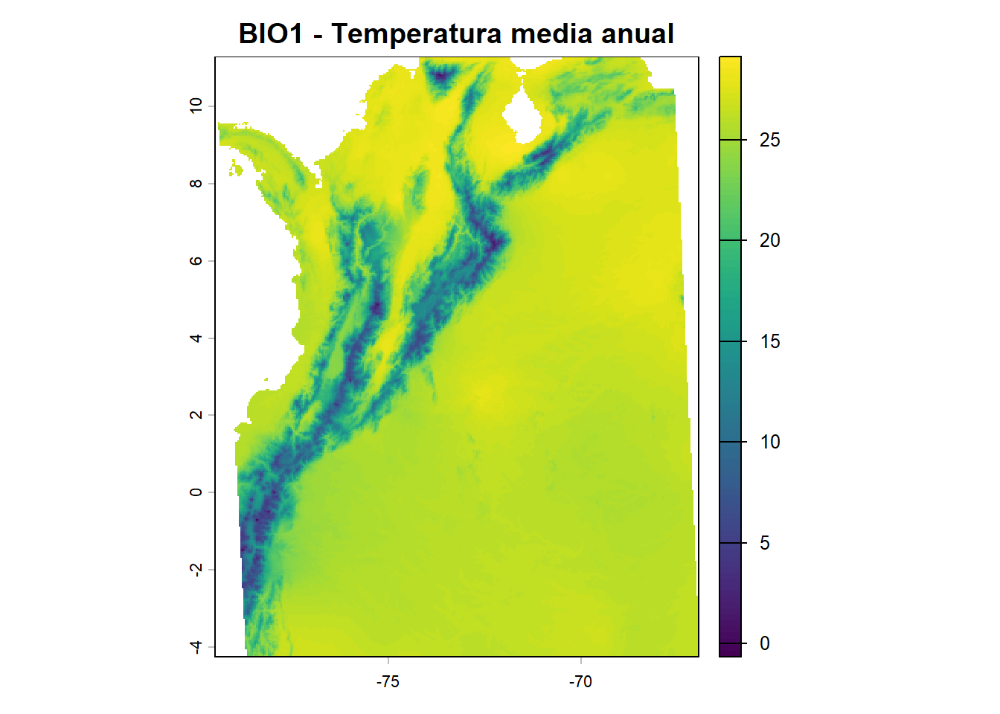
11.1.7 Variables de uso y cobertura del suelo
Además del clima, la distribución del jaguar también puede estar influida por la cobertura de vegetación, la agricultura, las áreas construidas, los cuerpos de agua y los humedales. Aquí se descargan variables globales de cobertura del suelo y se ajustan a la misma resolución y extensión que las variables climáticas.
NO ES NECESARIO CORRER
trees <- geodata::landcover(var = "trees", path = dir_data)
cropland <- geodata::landcover(var = "cropland", path = dir_data)
built <- geodata::landcover(var = "built", path = dir_data)
grassland <- geodata::landcover(var = "grassland", path = dir_data)
shrubs <- geodata::landcover(var = "shrubs", path = dir_data)
water <- geodata::landcover(var = "water", path = dir_data)
wetland <- geodata::landcover(var = "wetland", path = dir_data)
template <- bio_col[[1]]
prep_lc <- function(x, template, aoi) {
x <- crop(x, aoi)
x <- mask(x, aoi)
x <- resample(x, template, method = "bilinear")
return(x)
}
trees_col <- prep_lc(trees, template, colombia_v)
cropland_col <- prep_lc(cropland, template, colombia_v)
built_col <- prep_lc(built, template, colombia_v)
grassland_col <- prep_lc(grassland, template, colombia_v)
shrubs_col <- prep_lc(shrubs, template, colombia_v)
water_col <- prep_lc(water, template, colombia_v)
wetland_col <- prep_lc(wetland, template, colombia_v)
names(trees_col) <- "trees"
names(cropland_col) <- "cropland"
names(built_col) <- "built"
names(grassland_col) <- "grassland"
names(shrubs_col) <- "shrubs"
names(water_col) <- "water"
names(wetland_col) <- "wetland"
plot(trees_col, main = "Cobertura arbórea")SI DESCARGAS DATOS PUEDES CORRER
lulc <- rast(file.path(dir_data, "lulc_col.tif"))
trees_col <- lulc[[1]]
cropland_col <- lulc[[2]]
built_col <- lulc[[3]]
grassland_col <- lulc[[3]]
shrubs_col <- lulc[[4]]
water_col <- lulc[[5]]
wetland_col <- lulc[[6]]
template <- bio_col[[1]]
names(trees_col) <- "trees"
names(cropland_col) <- "cropland"
names(built_col) <- "built"
names(grassland_col) <- "grassland"
names(shrubs_col) <- "shrubs"
names(water_col) <- "water"
names(wetland_col) <- "wetland"
plot(trees_col, main = "Cobertura arbórea")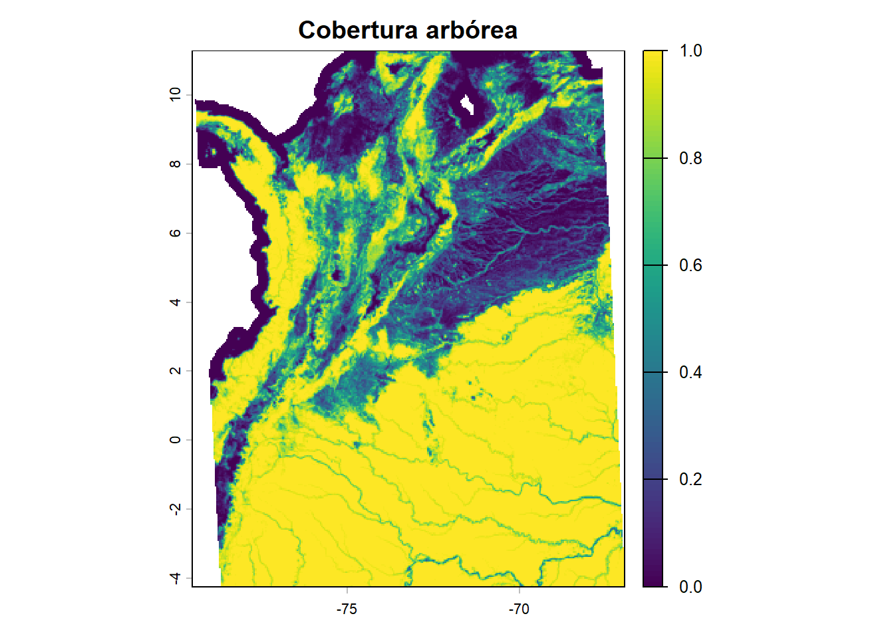
11.1.8 Carreteras y distancia a carreteras
Las carreteras pueden representar barreras, fuentes de mortalidad o indicadores de presión antrópica. En este caso se descargan carreteras desde OpenStreetMap y se calcula la distancia euclidiana a la carretera más cercana. Para que la distancia esté en metros, primero se reproyectan los datos a un sistema métrico.
NO ES NECESARIO CORRER
roads <- geodata::osm(
country = country_name,
var = "highways",
path = dir_data
)
# Filtrar carreteras principales si existe la columna highway
if("highway" %in% names(roads)) {
roads <- roads[roads$highway %in% c(
"motorway", "trunk", "primary", "secondary", "tertiary",
"motorway_link", "trunk_link", "primary_link", "secondary_link"
), ]
}
# Proyectar área, carreteras y template a CRS métrico
colombia_m <- project(colombia_v, crs_col)
roads_m <- project(roads, crs_col)
template_m <- project(template, crs_col, method = "near")
# Rasterizar carreteras
roads_r <- rasterize(
roads_m,
template_m,
field = 1,
background = NA,
touches = TRUE
)
# Distancia a carreteras en metros
dist_roads_m <- distance(roads_r)
names(dist_roads_m) <- "dist_roads_m"
# Regresar al CRS del stack ambiental
dist_roads <- project(dist_roads_m, template, method = "bilinear")
dist_roads <- mask(dist_roads, colombia_v)
plot(dist_roads, main = "Distancia a carreteras")SI DESCARGAS DATOS PUEDES CORRER
dist_roads <- rast(file.path(dir_data, "dist_roads_col.tif"))
plot(dist_roads, main = "Distancia a carreteras")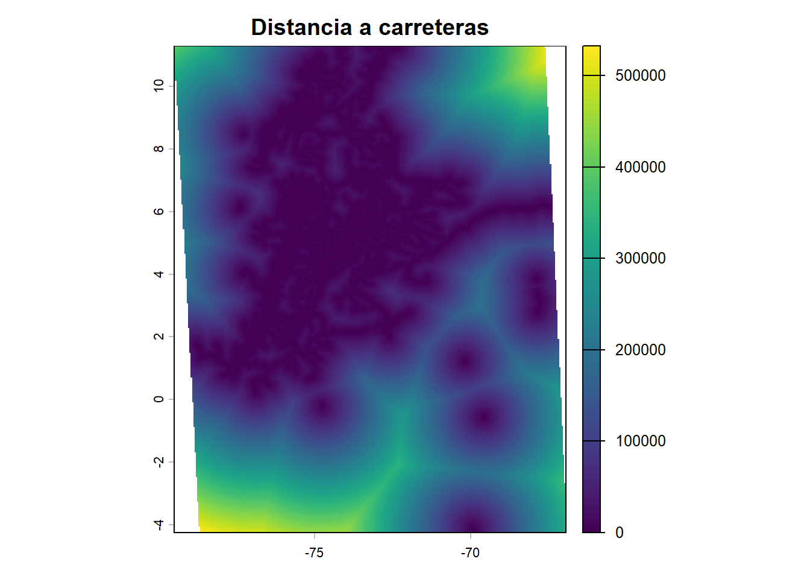
11.1.9 Construcción del stack ambiental
Una vez preparadas las variables climáticas, de cobertura y de distancia a carreteras, se combinan en un solo objeto espacial. Este stack será la base para extraer valores ambientales en los puntos de presencia y de fondo.
NO ES NECESARIO CORRER
env <- c(
bio_col,
trees_col,
cropland_col,
built_col,
grassland_col,
shrubs_col,
water_col,
wetland_col,
dist_roads
)
names(env)
writeRaster(
env,
filename = file.path(dir_data, "variables_ambientales_jaguar_colombia.tif"),
overwrite = TRUE
)SI DESCARGAS DATOS PUEDES CORRER
env <- rast(file.path(dir_data, "variables_ambientales_jaguar_colombia.tif"))
env
#> class : SpatRaster
#> size : 373, 301, 27 (nrow, ncol, nlyr)
#> resolution : 0.04166667, 0.04166667 (x, y)
#> extent : -79.5, -66.95833, -4.25, 11.29167 (xmin, xmax, ymin, ymax)
#> coord. ref. : lon/lat WGS 84 (EPSG:4326)
#> source : variables_ambientales_jaguar_colombia.tif
#> names : wc2.1~bio_1, wc2.1~bio_2, wc2.1~bio_3, wc2.1~bio_4, wc2.1~bio_5, wc2.1~bio_6, ...
#> min values : -0.65150, 5.491666, 63.85305, 8.304407, 5.192, -6.88, ...
#> max values : 29.10833, 12.730333, 95.48586, 130.102936, 36.560, 24.00, ...11.1.10 Limpieza espacial de las ocurrencias
Para reducir duplicación espacial y evitar que muchas ocurrencias en una misma celda dominen el modelo, se conserva una sola ocurrencia por celda ambiental. Este paso es una forma simple de rarefacción espacial a la resolución del raster.
occ_vect <- vect(occ_sf)
occ_xy <- crds(occ_vect)
occ_cell <- cellFromXY(template, occ_xy)
occ_clean <- occ_sf %>%
mutate(cell = occ_cell) %>%
filter(!is.na(cell)) %>%
group_by(cell) %>%
slice_sample(n = 1) %>%
ungroup()
occ_clean_vect <- vect(occ_clean)
cat("Ocurrencias originales:", nrow(occ_sf), "\n")
#> Ocurrencias originales: 1037
cat("Ocurrencias después de filtrar una por celda:", nrow(occ_clean), "\n")
#> Ocurrencias después de filtrar una por celda: 315
plot(st_geometry(colombia_sf), col = "gray90", main = "Ocurrencias limpias")
plot(st_geometry(occ_clean), add = TRUE, pch = 20, col = "red")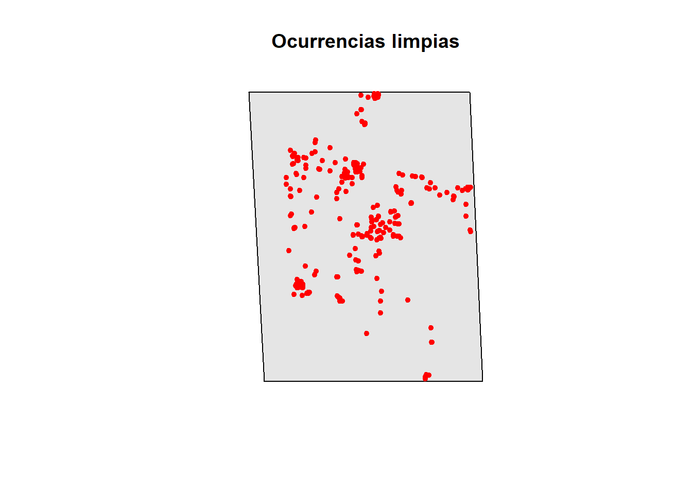
11.1.11 Generación de puntos de fondo
El modelo maxnet utiliza datos de presencia y puntos de fondo. Los puntos de fondo no son ausencias verdaderas, sino una muestra del ambiente disponible dentro del área de estudio. En este ejemplo se generan 10,000 puntos aleatorios.
n_bg <- 10000
bg <- spatSample(
env[[1]],
size = n_bg,
method = "random",
na.rm = TRUE,
xy = TRUE,
values = FALSE
)
bg_vect <- vect(
as.data.frame(bg),
geom = c("x", "y"),
crs = crs(env)
)
plot(env[[1]], main = "Presencias y background")
points(bg_vect, pch = 20, cex = 0.2, col = "gray")
points(occ_clean_vect, pch = 20, col = "red")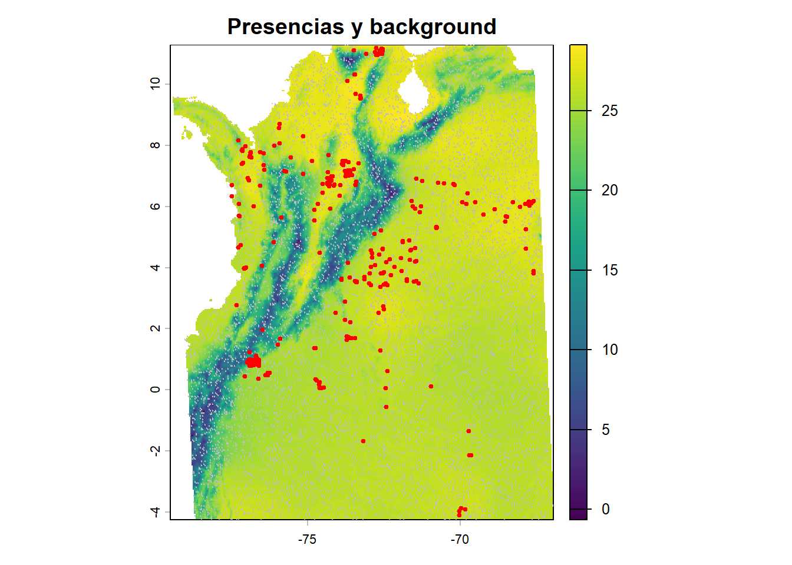
11.1.12 Extracción de variables ambientales
En esta etapa se extraen los valores ambientales para las presencias y para los puntos de fondo. Luego se construye una tabla con una columna pa, donde 1 representa presencia y 0 representa background.
pres_vals <- terra::extract(env, occ_clean_vect, ID = FALSE)
bg_vals <- terra::extract(env, bg_vect, ID = FALSE)
pres_df <- data.frame(pa = 1, pres_vals)
bg_df <- data.frame(pa = 0, bg_vals)
sdm_df <- rbind(pres_df, bg_df)
sdm_df <- na.omit(sdm_df)
cat("Datos finales para modelar:", nrow(sdm_df), "filas\n")
#> Datos finales para modelar: 10290 filas11.1.13 Reducción de colinealidad
La colinealidad entre variables puede dificultar la interpretación del modelo. Aquí se usa una regla simple: eliminar variables altamente correlacionadas, usando un umbral de correlación de 0.75. Este paso no reemplaza una selección ecológica de variables, pero ayuda a reducir redundancia.
remove_correlated <- function(df, cutoff = 0.75) {
cormat <- cor(df, use = "pairwise.complete.obs")
vars <- colnames(cormat)
keep <- rep(TRUE, length(vars))
names(keep) <- vars
for(i in seq_along(vars)) {
if(keep[i]) {
high_cor <- which(abs(cormat[i, ]) > cutoff)
high_cor <- high_cor[high_cor > i]
keep[high_cor] <- FALSE
}
}
return(names(keep[keep]))
}
env_names <- names(env)
vars_keep <- remove_correlated(
sdm_df[, env_names],
cutoff = 0.75
)
cat("Variables retenidas:\n")
#> Variables retenidas:
print(vars_keep)
#> [1] "wc2.1_2.5m_bio_1" "wc2.1_2.5m_bio_2"
#> [3] "wc2.1_2.5m_bio_3" "wc2.1_2.5m_bio_12"
#> [5] "wc2.1_2.5m_bio_15" "wc2.1_2.5m_bio_18"
#> [7] "trees" "cropland"
#> [9] "built" "shrubs"
#> [11] "water" "wetland"
#> [13] "dist_roads_m"11.1.14 División entre entrenamiento y prueba
El conjunto de datos se divide en entrenamiento y prueba. El conjunto de entrenamiento se usa para ajustar el modelo, mientras que el conjunto de prueba se usa para evaluar su desempeño predictivo. Esta partición aleatoria es útil como primer análisis, aunque para estudios más rigurosos se recomienda validación espacial.
11.1.15 Ajuste del modelo con maxnet
maxnet implementa un modelo tipo MaxEnt usando regularización. En este ejemplo se usan clases de features lineales, cuadráticas, producto e hinge (lqph). El resultado es un modelo de presencia-background que estima la idoneidad relativa del paisaje para el jaguar.
mx_formula <- maxnet.formula(
p = train$pa,
data = train[, vars_keep],
classes = "lqph"
)
mod_jaguar_colombia <- maxnet(
p = train$pa,
data = train[, vars_keep],
f = mx_formula
)
print(mod_jaguar_colombia$call)
#> glmnet::glmnet(x = mm, y = as.factor(p), family = "binomial",
#> weights = weights, lambda = 10^(seq(4, 0, length.out = 200)) *
#> sum(reg)/length(reg) * sum(p)/sum(weights), standardize = F,
#> penalty.factor = reg)11.1.16 Evaluación con AUC
El AUC resume la capacidad del modelo para diferenciar presencias de puntos de fondo. Valores más altos indican mayor discriminación, aunque el AUC debe interpretarse con cuidado en modelos presencia-background, especialmente cuando el background no representa ausencias reales.
test_pred <- predict(
mod_jaguar_colombia,
newdata = test[, vars_keep],
type = "cloglog"
)
auc_value <- pROC::auc(test$pa, test_pred)
cat("AUC del modelo para Colombia:", as.numeric(auc_value), "\n")
#> AUC del modelo para Colombia: 0.879053511.1.17 Predicción espacial del MDP
El modelo ajustado se aplica a todo el stack ambiental para generar un mapa continuo de idoneidad. Esta predicción representa el MDP del jaguar para el área de estudio. Los valores altos indican condiciones ambientales más favorables según el modelo.
pred_jaguar_colombia <- terra::predict(
env[[vars_keep]],
mod_jaguar_colombia,
fun = function(model, data) {
predict(model, newdata = data, type = "cloglog")
},
na.rm = TRUE
)
names(pred_jaguar_colombia) <- "jaguar_suitability_colombia"
plot(
pred_jaguar_colombia,
main = "MDP de jaguar en Colombia"
)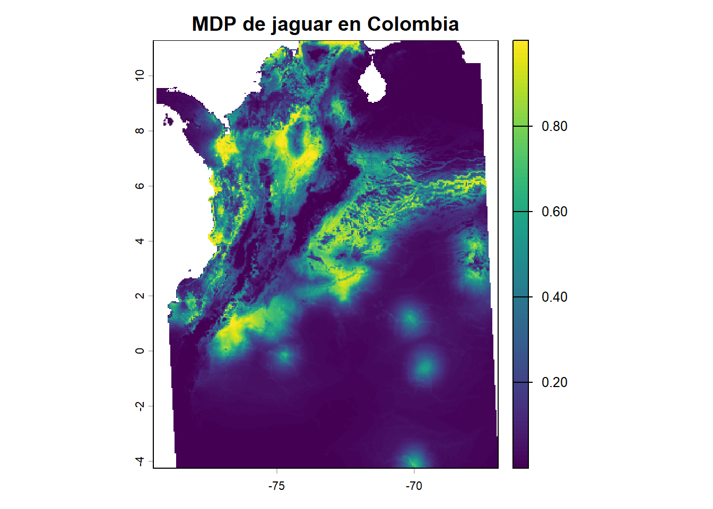
writeRaster(
pred_jaguar_colombia,
filename = file.path(dir_data, "MDP_jaguar_maxnet_colombia.tif"),
overwrite = TRUE
)11.1.18 Mapa binario de distribución potencial
Para convertir la predicción continua en un mapa binario, se aplica un umbral. En este ejemplo se usa el percentil 50 de las predicciones en las presencias, una regla común para evitar que unos pocos registros marginales definan todo el rango potencial. Este valor puede modificarse según el objetivo del estudio.
threshold_prob <- 0.5
pres_pred <- terra::extract(
pred_jaguar_colombia,
occ_clean_vect,
ID = FALSE
)[, 1]
threshold_p50 <- quantile(
pres_pred,
probs = threshold_prob,
na.rm = TRUE
)
jaguar_binary_colombia <- pred_jaguar_colombia
jaguar_binary_colombia[pred_jaguar_colombia >= threshold_p50] <- 1
jaguar_binary_colombia[pred_jaguar_colombia < threshold_p50] <- 0
names(jaguar_binary_colombia) <- "jaguar_binary_50_colombia"
plot(
jaguar_binary_colombia,
main = "Distribución binaria de jaguar"
)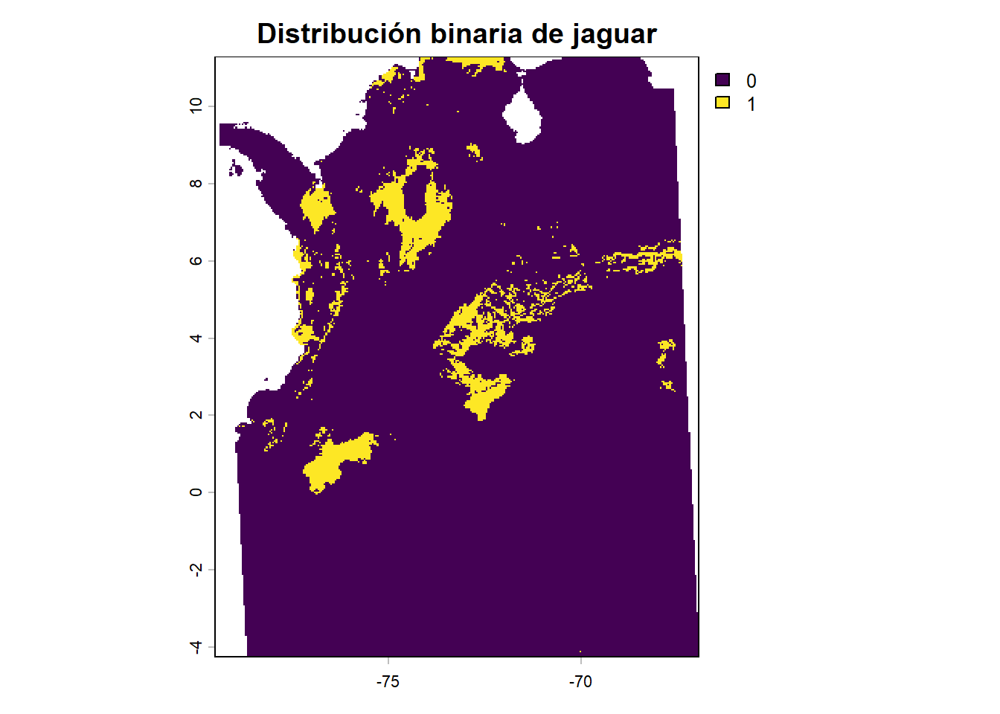
cat("Umbral percentil 50:", threshold_p50, "\n")
#> Umbral percentil 50: 0.727955
writeRaster(
jaguar_binary_colombia,
filename = file.path(dir_data, "MDP_jaguar_binary_p50_colombia.tif"),
overwrite = TRUE
)11.1.19 Importancia aproximada de variables
maxnet no genera una tabla de importancia equivalente a la salida clásica de MaxEnt Java. Sin embargo, es posible inspeccionar los coeficientes no nulos del modelo. Como algunas variables pueden aparecer en varias features, se agrega la importancia por variable original sumando los valores absolutos de sus coeficientes asociados.
coef_mod <- mod_jaguar_colombia$betas
coef_mod <- coef_mod[coef_mod != 0]
coef_df <- tibble(
feature = names(coef_mod),
coefficient = as.numeric(coef_mod),
importance = abs(coefficient)
) %>%
arrange(desc(importance))
get_original_var <- function(feature_name, vars_model) {
matched <- vars_model[str_detect(feature_name, fixed(vars_model))]
if(length(matched) == 0) {
return(feature_name)
} else {
return(matched[which.max(nchar(matched))])
}
}
coef_df <- coef_df %>%
mutate(
variable = sapply(feature, get_original_var, vars_model = vars_keep)
)
var_importance <- coef_df %>%
group_by(variable) %>%
summarise(
importance = sum(abs(coefficient)),
n_features = n(),
.groups = "drop"
) %>%
arrange(desc(importance))
print(var_importance)
#> # A tibble: 11 × 3
#> variable importance n_features
#> <chr> <dbl> <int>
#> 1 wetland 184. 3
#> 2 trees 21.9 8
#> 3 wc2.1_2.5m_bio_12 8.94 15
#> 4 shrubs 8.90 2
#> 5 wc2.1_2.5m_bio_18 5.72 7
#> 6 wc2.1_2.5m_bio_3 4.52 6
#> 7 wc2.1_2.5m_bio_15 4.24 7
#> 8 dist_roads_m 2.73 3
#> 9 wc2.1_2.5m_bio_1 2.45 7
#> 10 cropland 1.55 1
#> 11 wc2.1_2.5m_bio_2 1.52 2
ggplot(var_importance, aes(x = reorder(variable, importance), y = importance)) +
geom_col() +
coord_flip() +
labs(
x = "Variable ambiental",
y = "Importancia agregada",
title = "Importancia aproximada agregada por variable",
subtitle = "Suma del valor absoluto de coeficientes asociados a cada variable"
) +
theme_minimal(base_size = 12)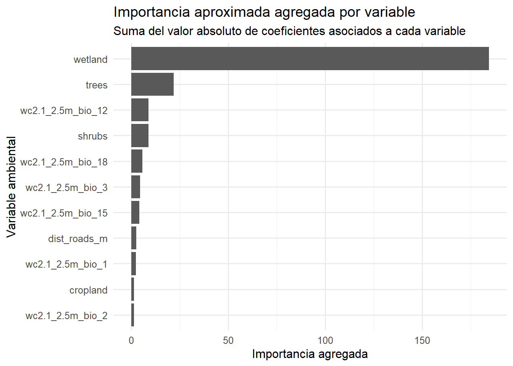
11.1.20 Transformación del MDP a resistencia
La conectividad funcional requiere una superficie que represente el costo o dificultad de movimiento. Aquí se transforma la idoneidad del MDP en resistencia. Primero se invierte la idoneidad:
\[ \text{costo base} = 1 - \text{idoneidad} \]
Así, las áreas de alta idoneidad tienen bajo costo base, mientras que las áreas de baja idoneidad tienen alto costo base.
sdm <- pred_jaguar_colombia
# Asegurar que el SDM esté entre 0 y 1
sdm <- terra::clamp(sdm, lower = 0, upper = 1)
plot(sdm, main = "MDP / idoneidad de jaguar")
# Alta idoneidad = bajo costo base
# Baja idoneidad = alto costo base
cost_base <- 1 - sdm
names(cost_base) <- "cost_base_inverse_sdm"
cost_base[cost_base < 0] <- 0
cost_base[cost_base > 1] <- 1
plot(cost_base, main = "Costo base: 1 - SDM")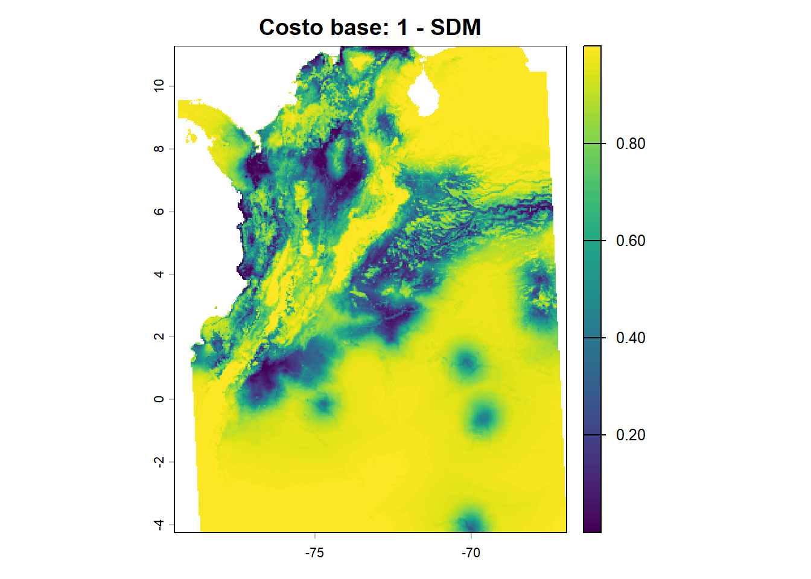
11.1.21 Transformación monomolecular con ResistanceGA2
La transformación monomolecular permite convertir el costo base en una superficie de resistencia no lineal. El parámetro shape controla la curvatura de la transformación, mientras que max define el valor máximo de resistencia. En este ejemplo se usan valores intermedios (shape = 2, max = 100) como hipótesis de resistencia, no como valores calibrados empíricamente.
# Si no tienes ResistanceGA2 instalado, instálalo antes de correr esta sección.
# La forma de instalación puede depender de tu versión local de R y del repositorio que uses.
# install.packages("remotes")
# remotes::install_github("wpeterman/ResistanceGA2")
library(ResistanceGA2)
shape_value <- 2
max_resistance <- 100
resistance_mono <- Resistance.tran(
transformation = "Monomolecular",
shape = shape_value,
max = max_resistance,
r = cost_base
)
plot(
resistance_mono,
main = paste0(
"Resistencia monomolecular\nshape = ",
shape_value,
", max = ",
max_resistance
)
)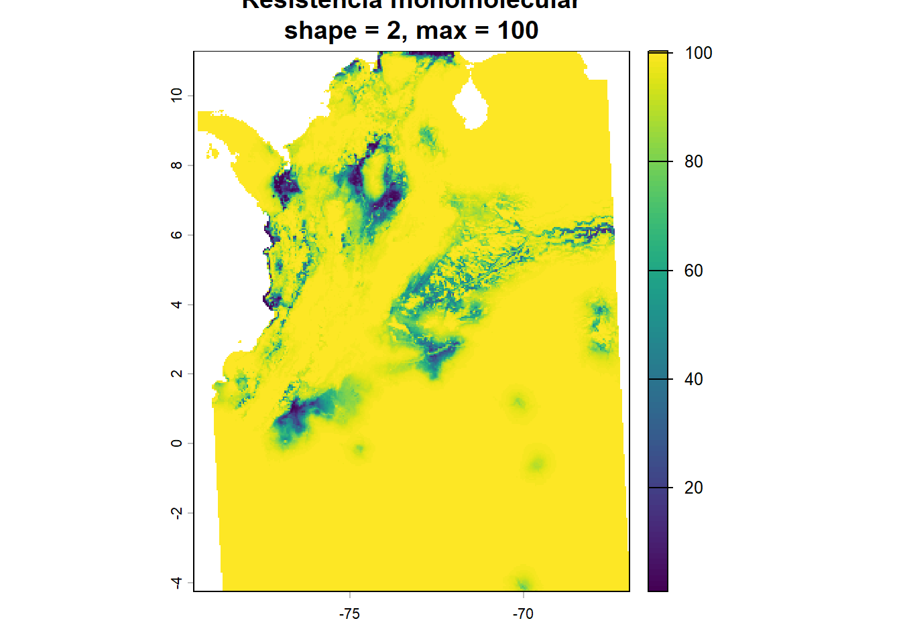
writeRaster(
resistance_mono,
filename = file.path(dir_data, "jaguar_resistance_monomolecular_colombia.tif"),
overwrite = TRUE
)11.1.22 Curva de transformación
Antes de usar una superficie de resistencia en conectividad, conviene visualizar la forma de la transformación. La curva ayuda a entender si el modelo penaliza suavemente o fuertemente las áreas de baja idoneidad.
plot_trans <- Plot.trans(
PARM = c(shape_value, max_resistance),
Resistance = cost_base,
transformation = "Monomolecular"
)
plot_trans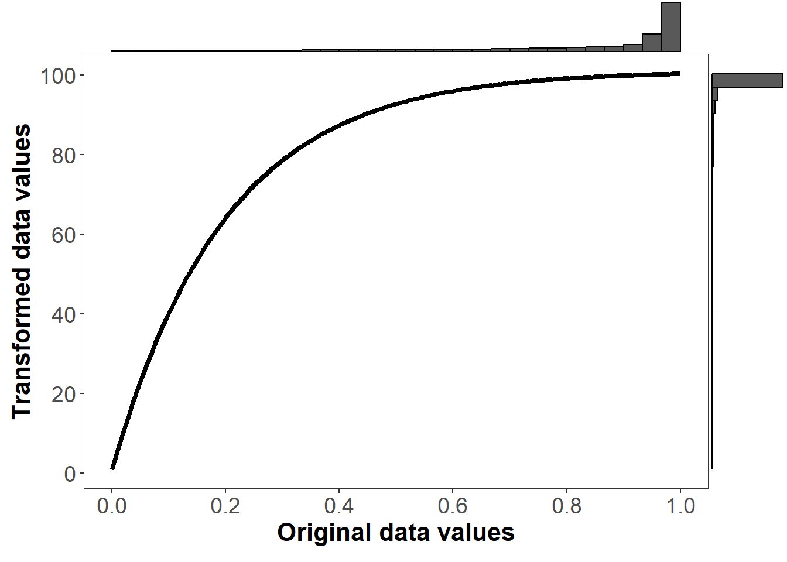
11.1.23 Del mapa binario a parches de hábitat
El mapa binario puede usarse para identificar parches potenciales de hábitat. Aquí se agrupan celdas contiguas usando conectividad de ocho direcciones. Este paso puede servir como base para análisis posteriores de conectividad estructural o funcional.
parches <- patches(
jaguar_binary_colombia,
directions = 8,
zeroAsNA = TRUE
)
plot(parches, main = "Parches de hábitat potencial")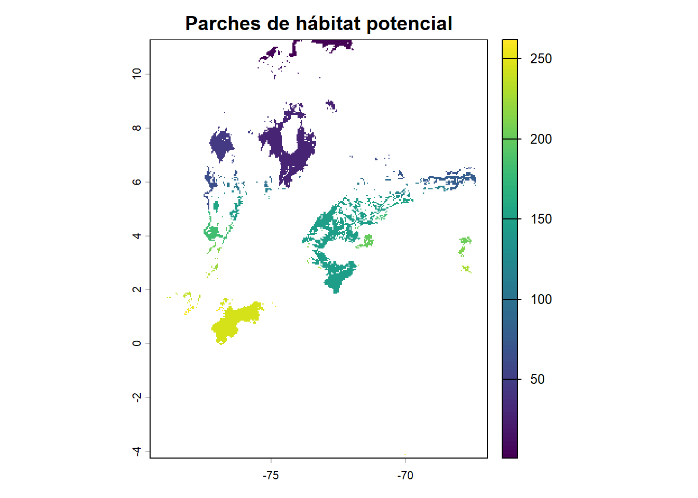
parches_sf <- as.polygons(parches) %>%
st_as_sf()
plot(parches_sf, main = "Parches como polígonos")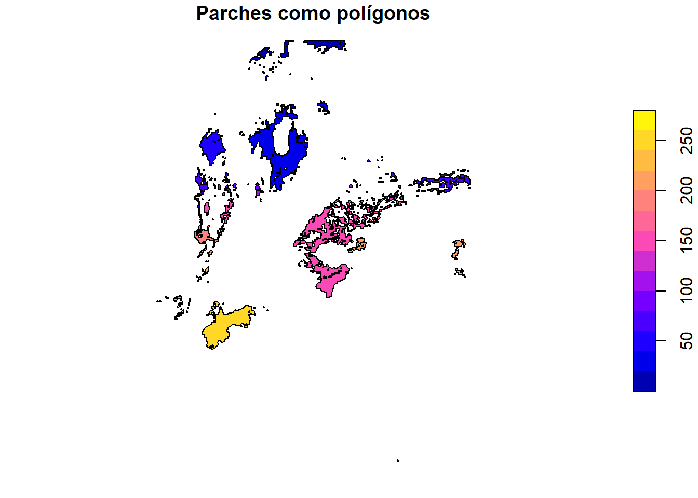
11.1.24 Interpretación general
El flujo genera tres productos principales. El primero es el MDP continuo, que representa la idoneidad ambiental relativa para el jaguar. El segundo es el mapa binario, que delimita áreas potencialmente adecuadas a partir de un umbral. El tercero es la superficie de resistencia, que traduce la idoneidad del MDP en costos potenciales de movimiento.
La resistencia monomolecular debe entenderse como un escenario de conectividad. En este caso, el supuesto central es que la resistencia aumenta de manera no lineal conforme disminuye la idoneidad del paisaje. Para análisis aplicados, se recomienda comparar varios valores de shape y max, o calibrar la superficie con datos independientes de movimiento, genética o detección.
11.1.25 Recomendaciones metodológicas
Para fortalecer este flujo en un análisis formal, se recomienda:
- Usar validación espacial en lugar de una partición aleatoria simple.
- Evaluar sesgo de muestreo en las ocurrencias de GBIF.
- Comparar distintos conjuntos de variables ambientales.
- Probar varios umbrales de binarización.
- Realizar análisis de sensibilidad de los parámetros
shapeymax. - Calibrar o validar la resistencia con datos independientes cuando sea posible.
En términos ecológicos, el MDP responde principalmente a la pregunta: ¿dónde existen condiciones ambientales adecuadas para el jaguar? En cambio, la superficie de resistencia responde a una pregunta diferente: ¿qué tan difícil podría ser para el jaguar moverse a través del paisaje? Aunque ambos mapas están relacionados, no representan exactamente el mismo proceso ecológico.